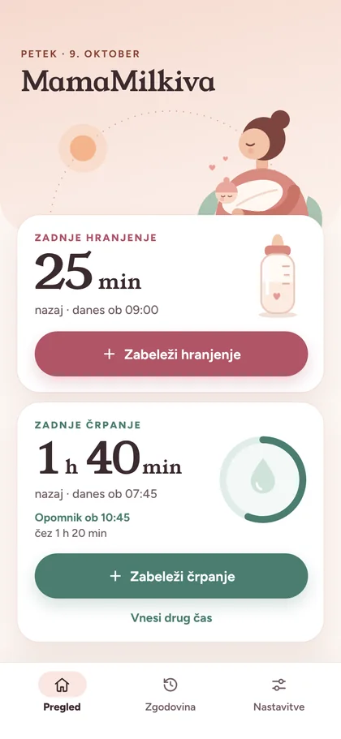
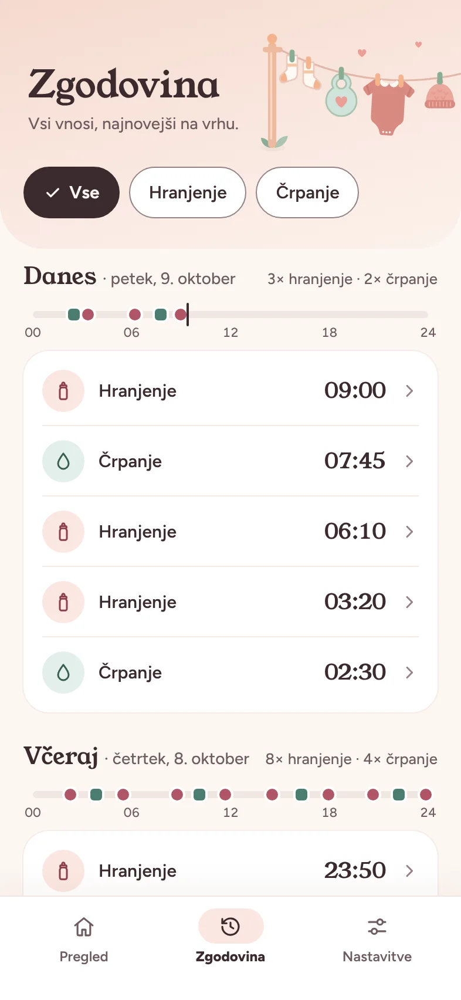
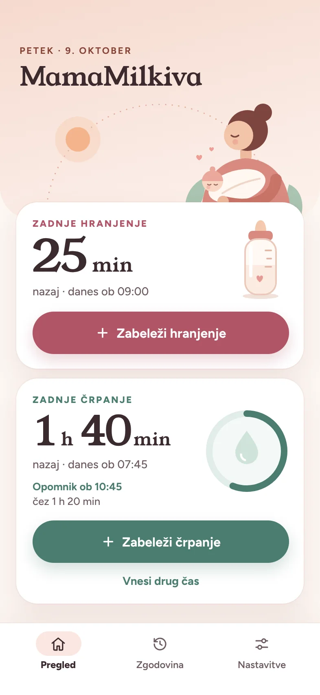
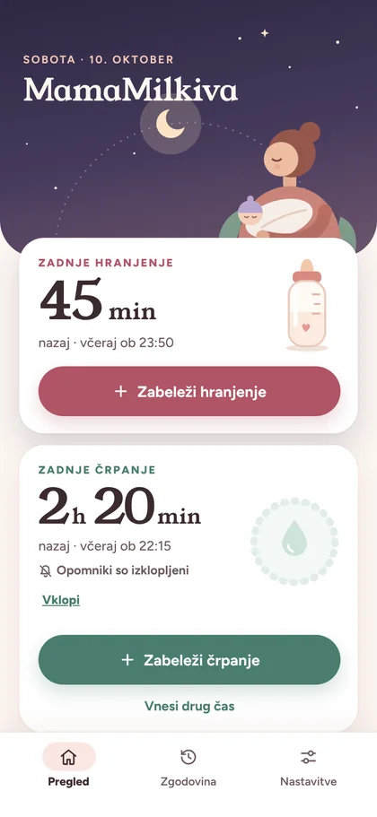
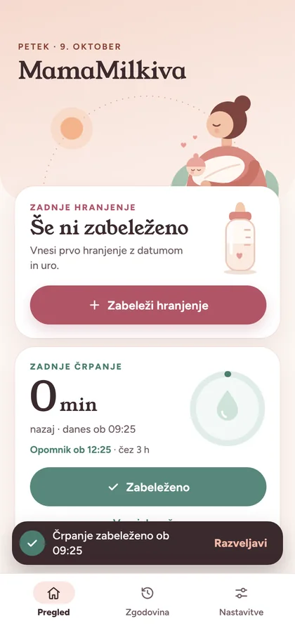
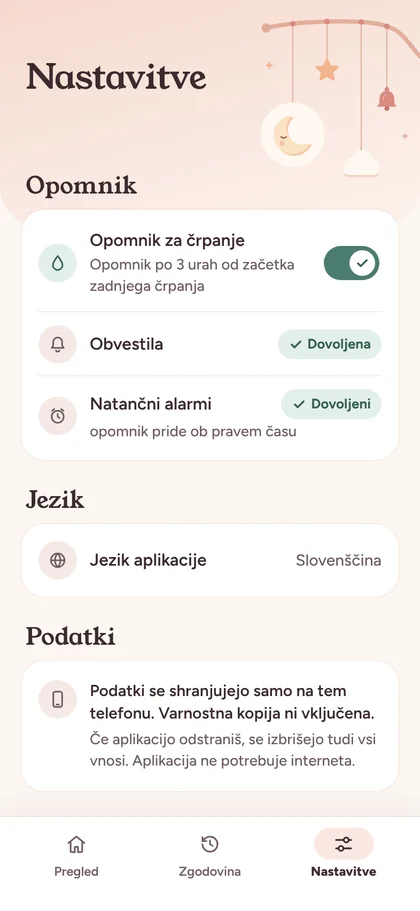

Koliko je minilo, takoj
Velike številke pokažejo čas od zadnjega hranjenja in črpanja, natančna ura je tik pod njimi. Brez računanja ob treh zjutraj.

Aplikacija za Android · odprta koda
MamaMilkiva zabeleži hranjenje in začetek črpanja ter jasno pokaže, koliko časa je minilo od zadnjega. Ko poteče izbrani čas, te nežno opomni.
Za Android 10 ali novejši. Datoteka APK je na voljo tudi na GitHubu.


Funkcije
Vse pomembno je na prvem zaslonu: brez iskanja po menijih, z eno roko, tudi ob treh zjutraj.
Velike številke pokažejo čas od zadnjega hranjenja in črpanja, natančna ura je tik pod njimi. Brez računanja ob treh zjutraj.

Ločena opomnika za hranjenje in črpanje, vsak s svojim časom od 30 minut do 12 ur. Eno nežno obvestilo, brez ponavljanja.

Vsi vnosi na enem mestu, najnovejši na vrhu, z dnevnim povzetkom. Vsak čas lahko popraviš ali vnos izbrišeš.
Med 20. in 6. uro se glava zaslona umiri v nočne barve. Velike tipke za eno roko in podpora za povečano pisavo do 200 %.

Izbereš, kako hraniš dojenčka. Črpanje in njegov opomnik se pokažeta le, če črpaš.
Včasih je ves svet velik natanko toliko kot naročje.
Kako deluje
Beleženje traja nekaj sekund. Opomnik poskrbi za ostalo.
Pusti predizbrani čas ali izberi drugega in shrani. Datum in ura sta vidna, preden shraniš.

Ko začneš črpati, pritisni gumb. Če si se zmotila, vnos takoj razveljaviš.
Ko poteče izbrani čas, privzeto 3 ure, te MamaMilkiva nežno opomni. Na zaklenjenem zaslonu brez podrobnosti.
Zasebnost
MamaMilkiva nima strežnika in ne zahteva računa. Vse, kar zabeležiš, je shranjeno samo na tvojem telefonu.

Izvorna koda je javno dostopna na GitHubu. Aplikacija je napisana v Kotlinu z Jetpack Compose in deluje povsem brez povezave.
Najlažje iz trgovine Google Play: poišči MamaMilkiva ali na telefonu odpri gumb na tej strani. Če Googlove trgovine ne uporabljaš, lahko datoteko APK preneseš z GitHuba. Android te bo morda vprašal, ali dovoliš nameščanje iz tega vira.
Ne. Aplikacija sploh nima dovoljenja za dostop do interneta. Vsi vnosi so shranjeni samo na tvojem telefonu, brez računa, oglasov ali analitike.
Da. Opomnik za hranjenje in opomnik za črpanje vklopiš posebej in vsakemu izbereš čas od 30 minut do 12 ur. Privzeto sta nastavljena na 3 ure.
Beleženje in zgodovina delujeta normalno, le opomnikov ne dobiš. Obvestila lahko kadarkoli vklopiš v Nastavitvah.
Če Android ne dovoli natančnih alarmov ali telefon varčuje z baterijo, lahko opomnik pride nekoliko kasneje, nikoli pa pred iztekom izbranega časa.
Vnosi ostanejo samo na tem telefonu. Varnostna kopija v oblak in prenos na nov telefon sta izklopljena. Ko aplikacijo odstraniš, se vnosi izbrišejo.
Ne. Opomnik je organizacijski pripomoček, ne zdravstveno priporočilo.
Na voljo v trgovini Google Play za Android 10 ali novejši. Brez računa in brez prijave: odpreš in začneš beležiti.